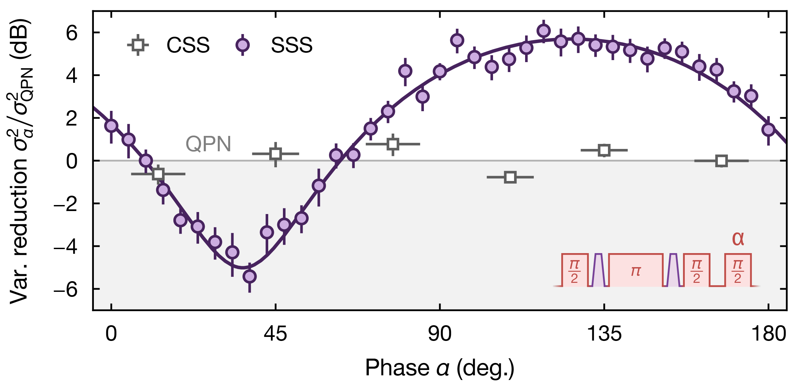

Realizing spin squeezing with Rydberg interactions in an optical clock
William J. Eckner, Nelson Darkwah Oppong, Alec Cao, Aaron W. Young, William R. Milner, John M. Robinson, Jun Ye, and Adam M. Kaufman
Nature 621, 734–739 (2023)
This publication list is being assembled.
First-author papers reflecting my main past and present research interests.

William J. Eckner, Nelson Darkwah Oppong, Alec Cao, Aaron W. Young, William R. Milner, John M. Robinson, Jun Ye, and Adam M. Kaufman
Nature 621, 734–739 (2023)
Newest first, including the papers above.
Alec Cao, William J. Eckner, Theodor Lukin Yelin, Aaron W. Young, Sven Jandura, Lingfeng Yan, Kyungtae Kim, Guido Pupillo, Jun Ye, Nelson Darkwah Oppong, and Adam M. Kaufman
Nature 634, 315–320 (2024)
Aaron W. Young, Shawn Geller, William J. Eckner, Nathan Schine, Scott Glancy, Emanuel Knill, and Adam M. Kaufman
Nature 629, 311–316 (2024)
William J. Eckner, Nelson Darkwah Oppong, Alec Cao, Aaron W. Young, William R. Milner, John M. Robinson, Jun Ye, and Adam M. Kaufman
Nature 621, 734–739 (2023)
Nathan Schine, Aaron W. Young, William J. Eckner, Michael J. Martin, and Adam M. Kaufman
Nature Physics 18, 1067–1073 (2022)
Aaron W. Young, William J. Eckner, William R. Milner, Dhruv Kedar, Matthew A. Norcia, Eric Oelker, Nathan Schine, Jun Ye, and Adam M. Kaufman
Nature 588, 408–413 (2020)
Matthew A. Norcia, Aaron W. Young, William J. Eckner, Eric Oelker, Jun Ye, and Adam M. Kaufman
Science 366, 93–97 (2019)